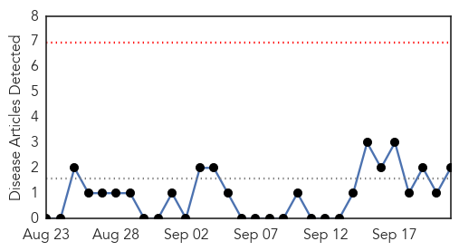
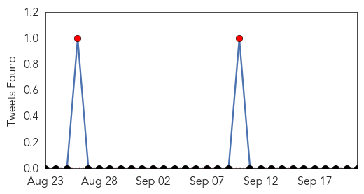
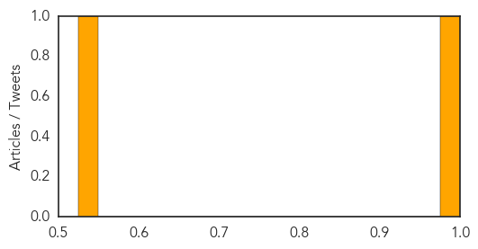
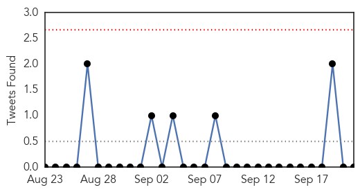

Mumps
30-Day Web Trend
0 alerts, 0 warnings

30-Day Twitter Trend
2 alerts, 0 warnings

Article Locations

Article Confidences
Top Articles:
Top Tweets:
-
No tweets found for Sep 21, 2015
Cholera
30-Day Web Trend
2 alerts, 0 warnings

30-Day Twitter Trend
0 alerts, 0 warnings

Article Locations

Article Confidences

Top Articles:
- 0.999
- Ministry of Health, WHO and partners step up response to cholera outbreak in Iraq
- 0.996
- Iraq Is Now Fighting a Cholera Outbreak in Addition to the Islamic State
- 0.983
- Health facilities alerted to the dangers of cholera - Kuwait Times
- 0.978
- Iraqi authorities on alert to face cholera outbreak after 4 deaths - Xinhua
- 0.977
- Fresh cholera outbreak plagues Baghdad
- 0.966
- Iraq Takes Steps To Stem Cholera Outbreak In Abu Ghraib
- 0.895
- Just what Iraq needs: A cholera outbreak
- 0.883
- Iraq Facing Cholera Outbreak as Public Services Deteriorate
- 0.861
- #Iraq moves to tackle deadly cholera outbreak
- 0.781
- Zimbabwe’s Hardest Hit District Fights Back
- 0.587
- News in Brief 21 September 2015 (AM)
Top Tweets:
-
No tweets found for Sep 21, 2015